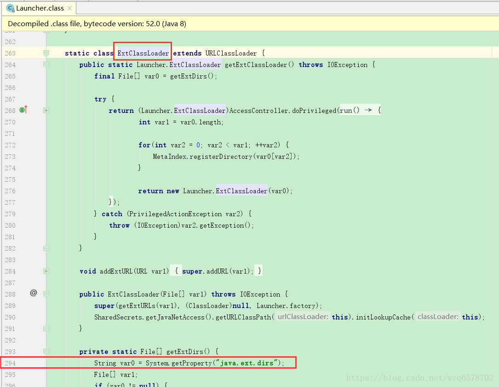
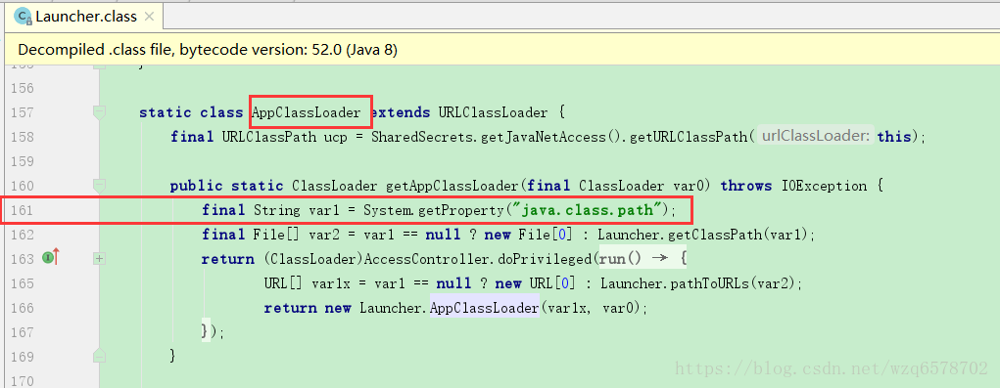

程序：
1 | public class MyTest23 { |
打印是三个加载器的加载路径：
1 | C:\Program Files\Java\jdk1.8.0_111\jre\lib\resources.jar;C:\Program Files\Java\jdk1.8.0_111\jre\lib\rt.jar;C:\Program Files\Java\jdk1.8.0_111\jre\lib\sunrsasign.jar;C:\Program Files\Java\jdk1.8.0_111\jre\lib\jsse.jar;C:\Program Files\Java\jdk1.8.0_111\jre\lib\jce.jar;C:\Program Files\Java\jdk1.8.0_111\jre\lib\charsets.jar;C:\Program Files\Java\jdk1.8.0_111\jre\lib\jfr.jar;C:\Program Files\Java\jdk1.8.0_111\jre\classes |
然后我们在控制台用命令的形式运行MyTest23：
1 | E:\Study\intelIde\jvm_lecture\out\production\classes>java com.twodragonlake.jvm.classloader.MyTest23 |
可以看到应用类加载器的加载路径和我们在idea运行的得到的路径不一样，有一个“.”的路径，就是当前路径，出现这种不一样原因是因为idea这种IDE工具在运行的时候会自动加上一些它认为有用的变量。
总结：
在运行期，一个Java类是由该类的完全限定名(binary name，二进制名)和用于加载该类的定义类加载器(defining loader)所共同决定的。
如果同样的名字（即相同的完全限定名）的类是由两个不同的加载器所加载的，那么这些类就是不同的，即便.class文件的字节码完全一样，并且从相同的位置加载亦是如此。
加入我们修改【sun.boot.class.path】的路径会发生什么呢？
1 | E:\Study\intelIde\jvm_lecture\out\production\classes>java -Dsun.boot.class.path=./ com.twodragonlake.jvm.classloader.MyTest23 |
可以看到我们将【sun.boot.class.path】修改为当前路径之后程序直接无法运行。
在Oracle的Hotspot实现中，系统属性sun.boot.calss.path如果 修改错了，则运行会出错，提示如下错误信息：
Error occurred during initialization of VM
java/lang/NoClassDefFoundError: java/lang/Object
内建与jvm中的启动类加载器会加载Java.lang.ClassLoader以及其他的Java平台类，
当jvm启动时，一块特殊的机器码会运行，他会加载扩展类加载器以及系统类加载器，
这块特殊的机器码叫做启动类加载器 (Bootstrap)
启动类加载器并不是Java类，而其他的加载器则都是Java类，
启动类加载器是特定于平台的机器指令，他负责开启整个加载过程。
所有类加载器（除了启动类加载器）都被实现为Java类，不过，总归要有一个组件来加载第一个Java类加载器，
从而让整个加载过程能够顺利进行下去，加载第一个纯Java类加载器就是启动类加载器的职责。
启动类加载器还会负责加载供JRE正常运行所需要的基本组件。这包括java.util与java.lang包中的类等等。
1 | System.out.println(ClassLoader.class.getClassLoader()); |
这行代码打印的是null，原因就是ClassLoader就是由启动类加载器加载的。
那么我们怎么证明扩展类加载器和应用类加载器也是由启动类加载器加载呢，由于扩展类加载器和应用类加载器都是在Launcher这个类里边，并且不是public的，那么我们就无法在MyTest23里边直接引用他们，但是之前我们提到，如果一个类加载器加载了Launcher，那么这个加载了Launcher的加载器会尝试加载Launcher里边的类，因此我们只要知道Launcher是是由谁加载的就可以知道扩展类加载器和应用类加载器是由谁加载的：
1 | System.out.println(Launcher.class.getClassLoader()); |
运行的结果是null，为此可知扩展类加载器和应用类加载器都是由启动类加载器加载的。
我们看扩展类加载器的源码就可以知道他们的加载路径：


我们可以通过ClassLoader类得到系统类加载器：System.out.println(ClassLoader.getSystemClassLoader());
看一下方法的doc：
public static ClassLoader getSystemClassLoader()
Returns the system class loader for delegation. This is the default delegation parent for new ClassLoader instances, and is typically the class loader used to start the application.
This method is first invoked early in the runtime’s startup sequence, at which point it creates the system class loader and sets it as the context class loader of the invoking Thread.
The default system class loader is an implementation-dependent instance of this class.
If the system property “java.system.class.loader” is defined when this method is first invoked then the value of that property is taken to be the name of a class that will be returned as the system class loader. The class is loaded using the default system class loader and must define a public constructor that takes a single parameter of type ClassLoader which is used as the delegation parent. An instance is then created using this constructor with the default system class loader as the parameter. The resulting class loader is defined to be the system class loader.
If a security manager is present, and the invoker’s class loader is not null and the invoker’s class loader is not the same as or an ancestor of the system class loader, then this method invokes the security manager’s checkPermission method with a RuntimePermission(“getClassLoader”) permission to verify access to the system class loader. If not, a SecurityException will be thrown.
如果系统属性【java.system.class.loader】被定义，那么这个属性的值对应的class会被默认的系统类加载器 加载，并且作为系统类加载器，这个被定义的加载器必须有一个单个参数的构造器，参数的类型是ClassLoader，用来代理父加载器，使用这个构造器传入默认的的系统类加载器会创建一个类加载器的实例，这个实例会成为系统类加载器。
Returns:
The system ClassLoader for delegation, or null if none
这个属性【java.system.class.loader】是jvm暴露出来的一个口子，让我们自定义实现系统类加载器。
那好我们用MyTest16作为系统类加载器：
1 | E:\Study\intelIde\jvm_lecture\out\production\classes>java -Djava.system.class.loader=com.twodragonlake.jvm.classloader.MyTest16 com.twodragonlake.jvm.classloader.MyTest23 |
报错的原因是我们没有定义只有一个参数的构造器，刚才doc里边说明了需要一个构造器，并且只有一个参数，参数类型是【java.lang.ClassLoader】，
我们在MyTest16里边定义这个构造器：
1 | public MyTest16(ClassLoader classLoader){ |
再次运行【java -Djava.system.class.loader=com.twodragonlake.jvm.classloader.MyTest16 com.twodragonlake.jvm.classloader.MyTest23】：
前提我们的MyTest23的代码如下：
1 | public class MyTest23 { |
运行命令的结果是：
1 | E:\Study\intelIde\jvm_lecture\out\production\classes>java -Djava.system.class.loader=com.twodragonlake.jvm.classloader.MyTest16 com.twodragonlake.jvm.classloader.MyTest23 |
程序是可以运行的，说明刚才的构造器的定义是必须的。
然后我们在MyTest23的main函数添加2行代码：
1 | System.out.println(MyTest23.class.getClassLoader()); |
在控制台的用命令运行【java -Djava.system.class.loader=com.twodragonlake.jvm.classloader.MyTest16 com.twodragonlake.jvm.classloader.MyTest23】输出：
1 | sun.misc.Launcher$AppClassLoader@18b4aac2 |
MyTest16之所以是系统类加载器加载的，上边的官方doc里边已经说明了：
The class is loaded using the default system class loader and must define a public constructor that takes a single parameter of type ClassLoader which is used as the delegation parent.
自定义的系统类加载器由默认的系统类加载器加载。所以MyTest16作为自定义的系统类加载器的它自身的加载器就是默认的系统了加载器AppClassLoader。
然后我们在加一行代码：
1 | System.out.println(ClassLoader.getSystemClassLoader()); |
在控制台运行命令【java -Djava.system.class.loader=com.twodragonlake.jvm.classloader.MyTest16 com.twodragonlake.jvm.classloader.MyTest23】输出：
1 | com.twodragonlake.jvm.classloader.MyTest16@4e25154f |
如果我们用idea直接运行得到是AppClassLoader，而控制台显式的指定了自定义系统类加载器，所以得到的系统类加载器是MyTest16。